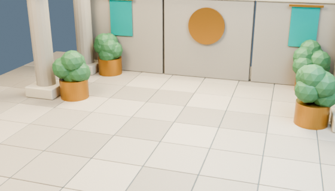
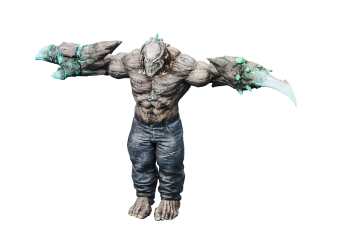
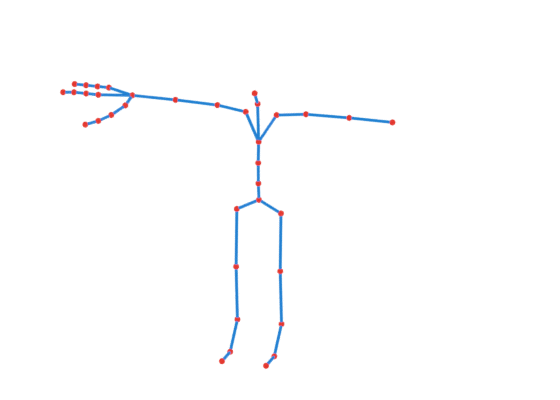

3D RESPONSIVENESS TO THE SCENE
We vary the floor target’s location while keeping the character, background, camera, and prompt fixed.
We measure how closely the generated motion reaches the target in the original 3D scene.
The average distance to the target decreases from 0.856 m at the start to 0.185 m at the end.
Inputs
Scene

Character


Prompt
The character walks directly to the red-and-white bullseye with steady, alternating steps. The character slows on arrival, then stops upright with the bullseye between its feet. The bullseye remains fixed on the floor.